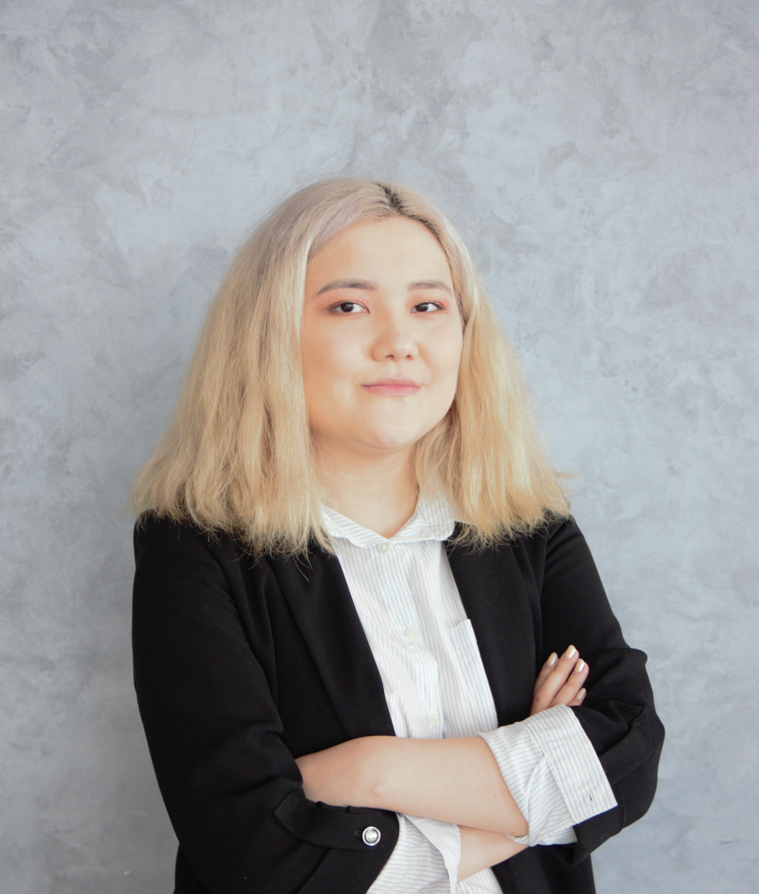

Aruzhan Bapaikhan 🍒

Summary 🧾
International Relations Graduate. Agile, attentive to detail, empathic with the ability to think critically,
collaborate and keep a work ethic. Good oral and writing skills, fast learner, and multi-tasker.
Education 📚
High School Diploma, A level, Cambridge Certificate
Nazarbayev Intellectual School of Physics and Mathematics, 2012-2018
Bachelor of Arts in Political Science and International Relations
Nazarbayev University, 2018-2023
Work Experience 💼
Internet Marketer - Expert Marketing, Astana, Kazakhstan
July - August 2016
- Working on a WordPress platform
- Filling the website with products' cards
- Editing the products' cards description
- Updating website's information
Stand-assistant - EXPO 2017, Astana, Kazakhstan
June - August 2017
- Operated a stand in the pavilion
- Assisted in the navigation of guests
- Gave guided tours to visitors within a pavilion
Assistant Manager - JSC Halyk Bank of Kazakhstan, Astana, Kazakhstan
August 2023 - January 2024
- Greeted customers and answered their inquiries
- Promoted bank services to clients and referred them to appropriate ones
- Prepared declarations, financial statements, insurance and reports using Microsoft Office Suite
- Initiated and managed dispute cases
- Drew up contracts and corresponding annexes
- Maintained the prolongation of deposits
- Managed incoming and outgoing mail and correspondence
- Maintained customer records and updated account information
Chief Expert on Water Resources - International Water Assessment Center, Astana, Kazakhstan
- Drew up draft letters' statements, applications and other documentation on water resources
- Prepared project proposals, press releases and background information on various water-related topics.
- Maintained communication with the representatives of IOs, NGOs, and government agencies.
- Organized online and offline events (such as conferences, workshops, seminars)
- Assisted with scheduling appointments and meetings
- Prepared reports and presentations using Microsoft Office Suite
- Proofread the documents in English
Skills 🛠️
- Database management
- Google Workspace
- Microsoft Office Suite
- Maintaining correspondence
- Web Development:
Languages 🌐
- Russian - Fluent
- English - Advanced
- Kazakh - Upper Intermediate
Awards and Certifications 🏆
- "Introduction to Data Analytics" with SQL, PowerBI, Excel - DataBoom (May 2023)